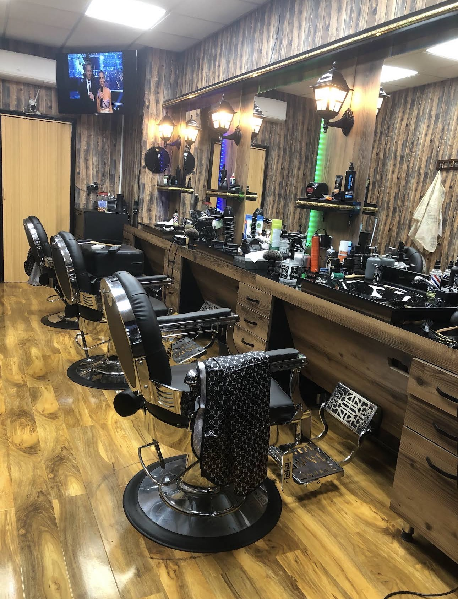

Gents Haircut
Clean everyday cuts, classic styles and modern finishes.
Croydon's premium barbershop
Professional haircuts, clean skin fades, beard grooming and a proper barbershop experience in Lower Addiscombe.
A better first impression
The current online presence does not show the premium look of Silk n Shine. This concept uses their real shop photos, black-and-gold signage, warm wood interior and strong Google reputation to create a more professional barber brand.
Services
Clear service cards help people choose quickly on mobile before they call, walk in or ask for directions.
Clean everyday cuts, classic styles and modern finishes.
Sharp fading, smooth blending and detailed finishing.
Shape, line-up and tidy beard grooming.
A complete grooming package for a fresh full look.
Friendly service and neat cuts for younger customers.
Traditional shave experience with a clean smooth finish.

Premium atmosphere
The shop already has a strong identity. The website should not feel like a template — it should feel like Silk n Shine.
No fake stock images. Real photos build trust.
Call, directions and WhatsApp-style actions always easy.
Built around Croydon, Lower Addiscombe and barber searches.
Gallery
This section can later include haircut results, fades, beard trims and before/after transformations.



Prices
Final prices should be taken directly from the shop price list. This layout is ready for real prices.
High-converting section
This is one of the most powerful sections for a barber website. Once the owner gives permission, each transformation can show the quality of the fade, beard line-up and finish.
Ask for a fresh cutTeam
We can add real barber photos, names and specialties after asking the team.
Skin fades • Beard styling • Classic cuts
Modern styles • Kids cuts • Taper fades
Hot towel shave • Line-ups • Beard finish
Google reputation
Silk n Shine already has strong trust. The website should display it clearly instead of hiding it behind a poor directory page.
Based on 100+ Google reviews shown in the business profile.
“Friendly staff and consistent results.”
Google review highlight“Great value and attention to detail.”
Google review highlight“Skilled barbers and a welcoming shop.”
Google review highlightOpening hours
Exact times can be updated from Google Business Profile.
Find us
Located on Lower Addiscombe Road, Croydon — easy to find, easy to call, easy to visit.
The live Google map will be placed here when the site goes live.